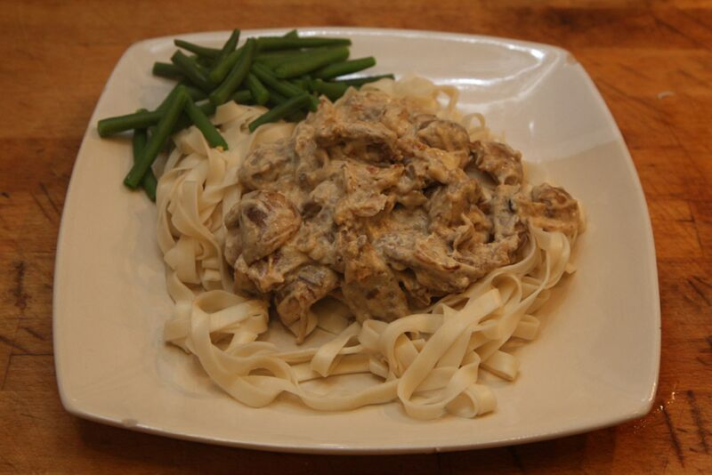

Beef stroganoff is an iconic Russian disch that consists of beef in a creamy sauce. According to legend, it was created by chefs who worked for Stroganov family in the 1800s. The dish is often made with mushrooms and served over rice or egg noodles